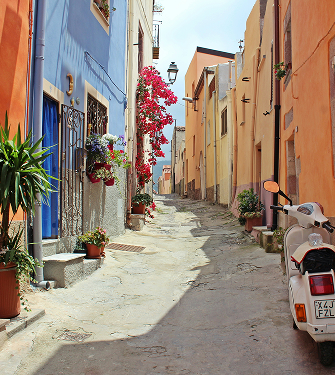

.png)
Welcome to Shore
Guesthouse.
Shore Guesthouse is a dream come true, a labor of love inspired by the childhood summers I spent here with my grandparents. Their stories of Oia, the warmth of the island life, and the magic of this place have always stayed with me. Restoring this home has been a way to honor their memory and share the spirit of Oia with others.

History of the Neighbourhood

Oia is a living, breathing village. Wander the streets and you’ll find hidden courtyards and locals chatting over coffee. Skip the fancy restaurants and enjoy today’s catch at a family-run taverna. Catch the sunset for a moment of peace. And, if you can, strike up a conversation with a local – they’ll tell you stories of Oia that no guidebook can.

Visit
Option 1
Private Transfer
(Easiest & Recommended)
For a stress-free arrival, we can arrange a private transfer for you. A driver will be waiting at the port with a sign and will bring you directly to Shore Guesthouse in about 35–40 minutes.
Price:
€40–€60 (varies by season)
How to Book:
Just send us your ferry details, and we’ll take care of it!
Option 2
Taxi
Taxis are available at the port but can be scarce during peak times.
Price:
€40–€60 (varies by season)
About:
Drivers may drop you at a central spot in Oia (due to
pedestrian-only areas), but we’ll guide you from there.
Option 3
Public Bus
Take a bus from Athinios Port to Fira (€2.50, ~30–40 min).
Price:
€5